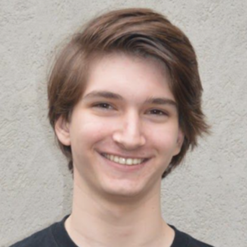

About Me
I study Computer Science at the Ohio State University. I am an undergraduate research assistant working for Dr. Sanggu Kim. I am interested in the following things:
- GNU Guix
- GNU Emacs
- Wayland
- Lisp
- Haskell
- Bioinformatics
- Drumming
I study Computer Science at the Ohio State University. I am an undergraduate research assistant working for Dr. Sanggu Kim. I am interested in the following things: